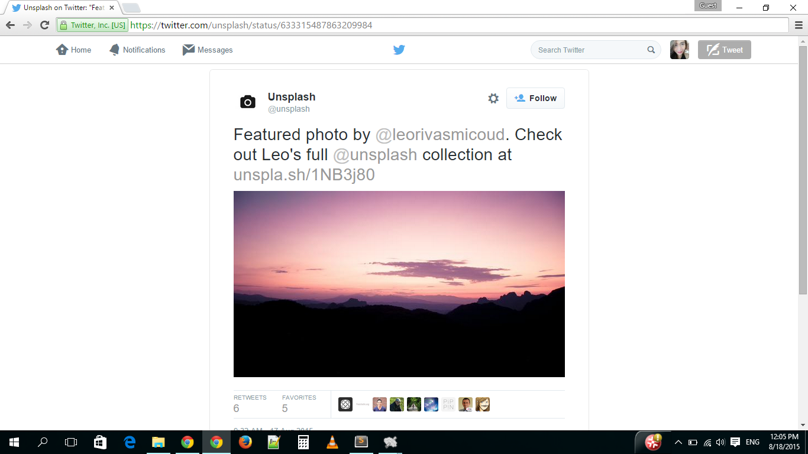
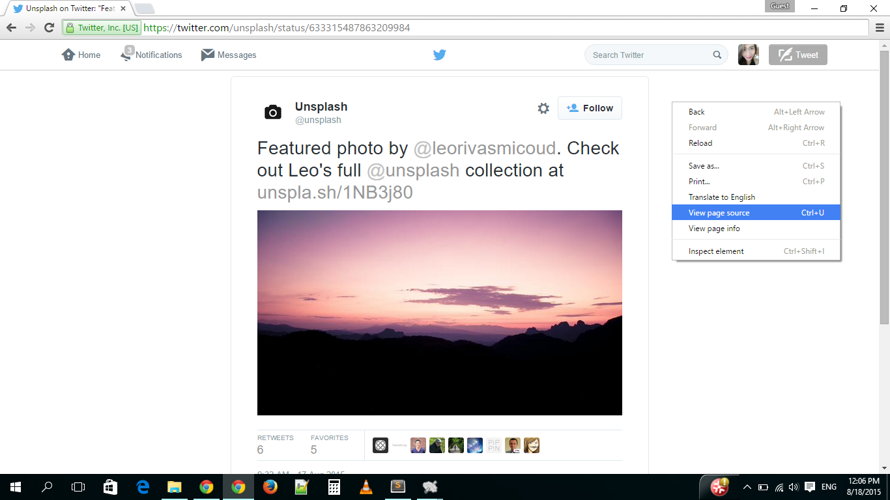
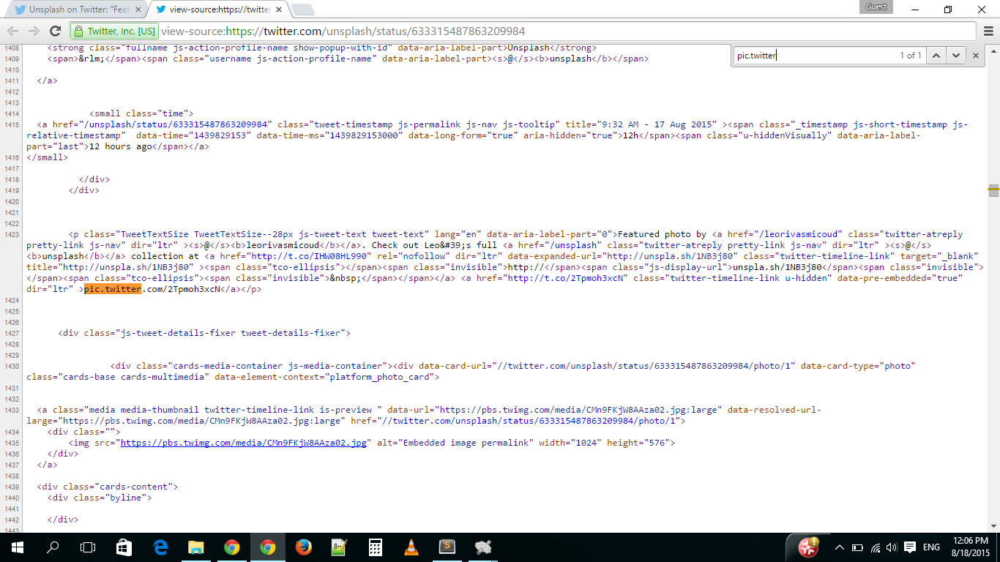
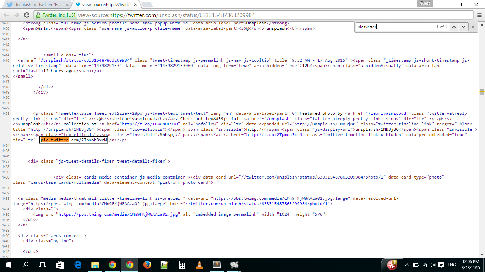
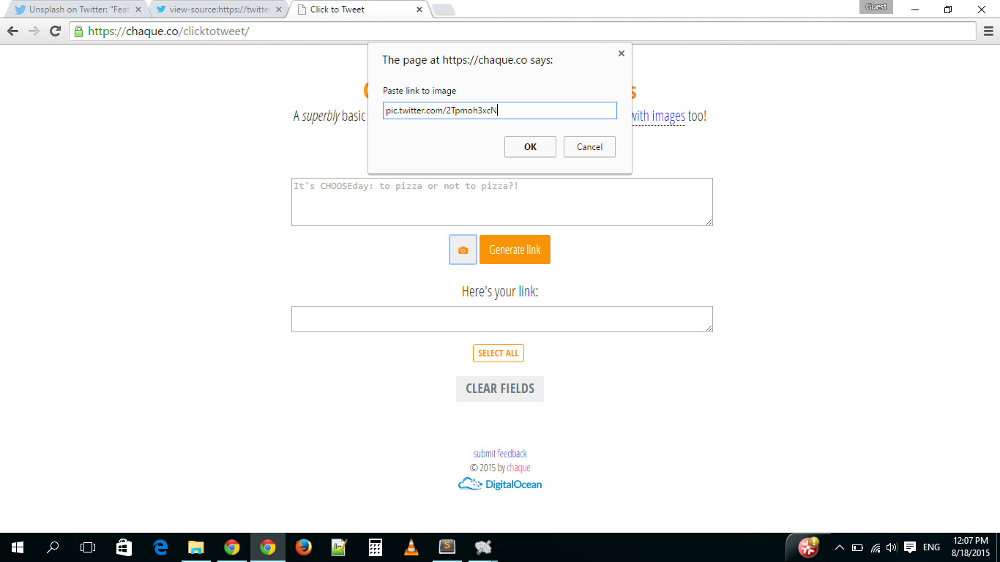
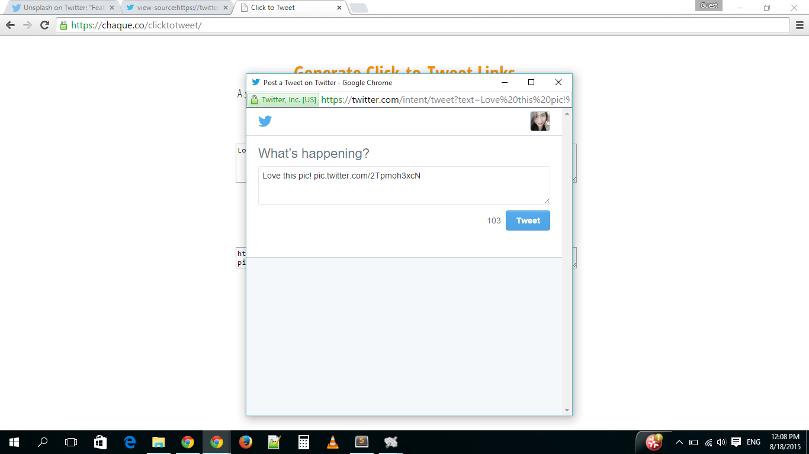
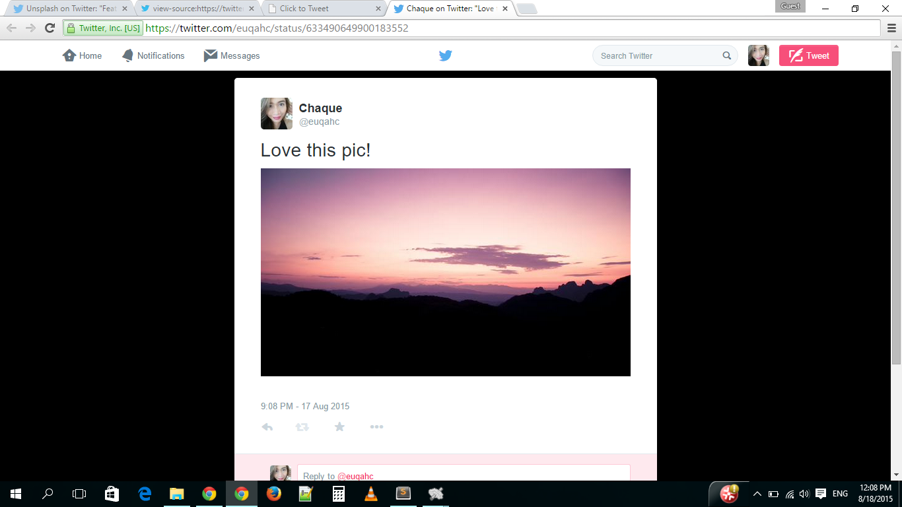

You'll be needing a Twitter image URL (e.g. pic.twitter.com/2Tpmoh3xcN) for this.
-
To get the Twitter image URL, the photo must first be published on a public Twitter account.
-
Once photo is published, go to the status page. (I'm using a tweet by @unsplash for this particular example to highlight the fact that you're not limited to using your own tweets.)
 -
Right click and click on "View page source" (keyboard shortcut: Ctrl+U).
 -
Next hit Ctrl+F and type "pic.twitter" in the search box. The page should scroll down to where the Twitter image URL is located. It should look like this:
pic.twitter.com/2Tpmoh3xcN -
Copy the Twitter image URL.
 -
Now that you have the Twitter image URL, go back to https://chaque.co/clicktotweet, click on the camera icon next to the "Generate link" button, and paste the Twitter image URL.
 -
Then type in your message if you haven't yet and hit "Generate link". Click on "Preview" to test your link.
 -
And you're done! Here's what it looks like if you actually publish the tweet:

Awesome, huh? Let me know if you're having trouble generating links.